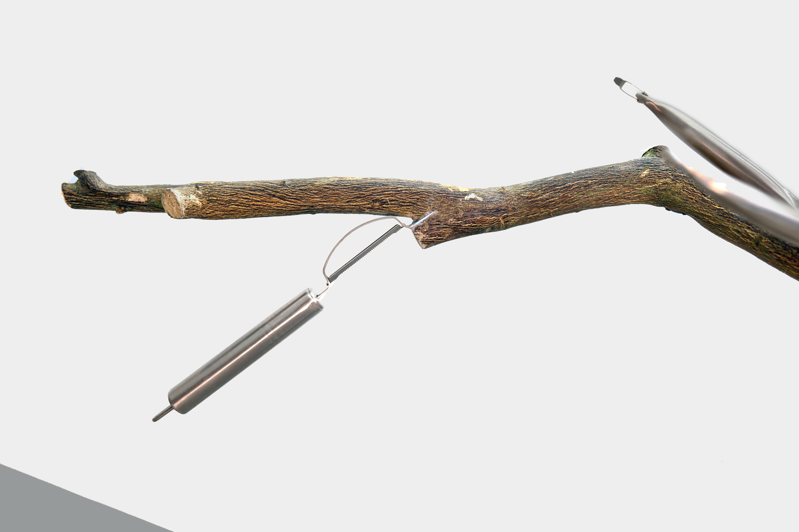
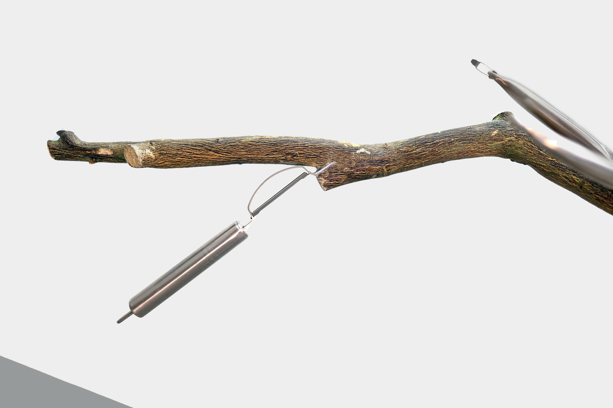
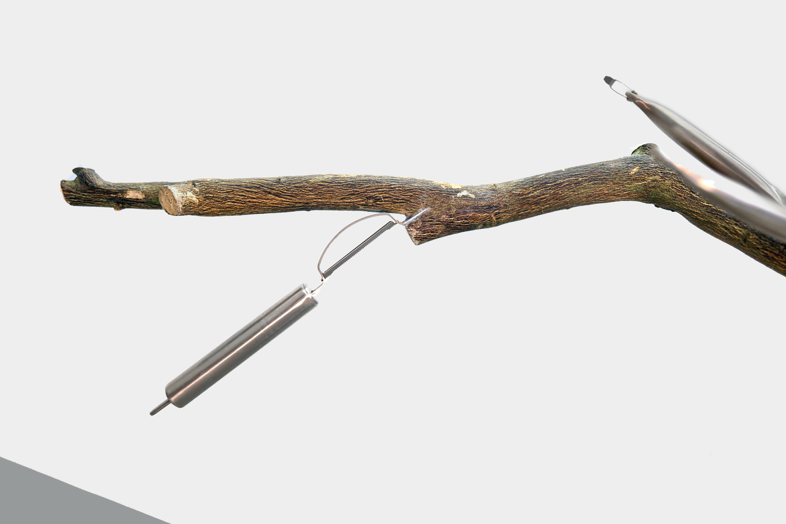
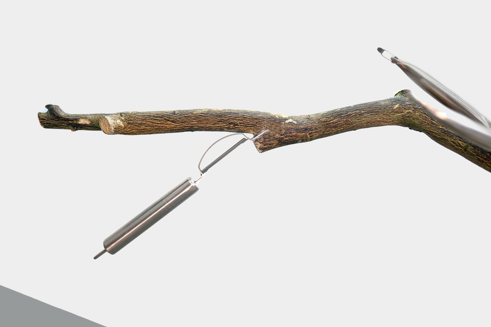

 

Installation. Material: nail tips, tree, knife, sofa. Variable dimensions. Time: 2021.
"Encounter" is a continuation of "Stray Birds", the former has birds and the latter does not. Does kitchenware only meet gas ranges, fridges, and food? I created an encounter for trees, kitchenware, and sofa. The work incorporates injurious utensils commonly used in the kitchen into a tree trunk, and one of the knives becomes a bird's wing. And I put fake nails on the tip of knives in an attempt to neutralize its sharpness.